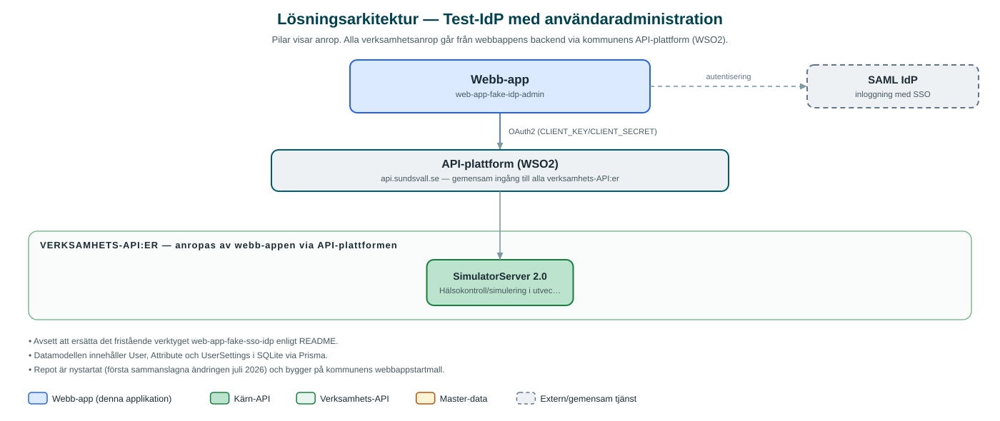

Test-IdP med användaradministration
Ett utvecklingsverktyg som simulerar kommunens SAML-inloggning och låter utvecklare administrera testanvändare och deras attribut i ett eget gränssnitt.
Om applikationen
Det här är ett internt utvecklingsverktyg som fungerar som en låtsas-identitetsleverantör (IdP) för SAML-inloggning. Under utveckling och test kan kommunens webbappar logga in mot den i stället för den riktiga inloggningstjänsten, vilket gör det enkelt att testa olika användare och behörigheter utan att röra produktionsmiljön.
Till skillnad från den enklare test-IdP:n som funnits tidigare har verktyget ett administrationsgränssnitt där testanvändare, deras attribut och inställningar hanteras och sparas i en lokal databas. Verktyget är avsett att på sikt ersätta den fristående test-IdP:n.
Verktyget är inte en tjänst för invånare eller verksamhet utan enbart ett stöd i systemutveckling.
Det här stödjer applikationen
- Simulerad SAML-inloggning – Agerar identitetsleverantör så att appar kan testa inloggningsflöden lokalt.
- Administration av testanvändare – Skapa, redigera och ta bort testanvändare med attribut via ett webbgränssnitt.
- Lagring i databas – Testanvändare och inställningar sparas beständigt i en lokal databas.
- Både SP och IdP – Backenden agerar både SAML Service Provider och test-IdP, med metadata och svarsbyggare.
Teknisk dokumentation
Nedan beskrivs hur applikationen är uppbyggd, vilka API:er den använder och vad som krävs för att driftsätta den. Informationen är härledd ur källkoden och dess konfiguration på GitHub.
Arkitektur

Applikationen består av en webbaserad frontend (Next.js 16, React (separata frontend- och admin-appar, byggda på sk-web-gui webbappsmall)) och en backend (Node.js/Express med TypeScript, Prisma ORM mot SQLite) som utvecklas i samma kodbas. Verksamhetsanrop går via kommunens gemensamma API-plattform (WSO2) – frontend pratar aldrig direkt med underliggande system. Inloggning: SAML (SSO) för admingränssnittet; verktyget är självt en test-IdP. Övriga integrationer som förekommer i koden: SAML (SP och IdP).
Teknikstack
- Frontend: Next.js 16, React (separata frontend- och admin-appar, byggda på sk-web-gui webbappsmall)
- Backend: Node.js/Express med TypeScript, Prisma ORM mot SQLite
- Test: Jest, Cypress
API-beroenden
Applikationen konsumerar följande API:er via kommunens API-plattform. Versionerna är hämtade ur källkodens API-konfiguration.
| API | Version | Användning |
|---|---|---|
| SimulatorServer | 2.0 | Hälsokontroll/simulering i utvecklingsmiljö. |
Konfiguration och driftsättning
- Miljöfiler: frontend/.env, backend/.env.development.local och .env.test.local
- Egna IdP-nycklar och metadata (SAML_IDP_ENTITY_ID, SAML_IDP_PRIVATE_KEY, SAML_SP_AUDIENCE m.fl.)
- SAML_IDP_ENUMERATE_USERS för att lista testanvändare på inloggningssidan
- Databas initieras med Prisma (generate/migrate/seed)
- Docker Compose-filer, inklusive variant med extern proxy (nginx)
Noterbart ur källkoden
- Avsett att ersätta det fristående verktyget web-app-fake-sso-idp enligt README.
- Datamodellen innehåller User, Attribute och UserSettings i SQLite via Prisma.
- Repot är nystartat (första sammanslagna ändringen juli 2026) och bygger på kommunens webbappstartmall.
Källkod
Källkoden är öppen och finns hos Sundsvalls kommun på GitHub. I källkodsförrådet finns även instruktioner för att klona, konfigurera och starta applikationen i egen miljö.